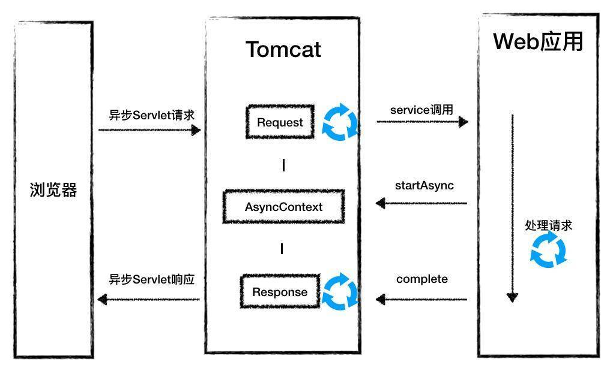

- 00 开篇词 Java程序员如何快速成长？.md.html
- 01 Web容器学习路径.md.html
- 02 HTTP协议必知必会.md.html
- 03 你应该知道的Servlet规范和Servlet容器.md.html
- 04 实战：纯手工打造和运行一个Servlet.md.html
- 05 Tomcat系统架构（上）： 连接器是如何设计的？.md.html
- 06 Tomcat系统架构（下）：聊聊多层容器的设计.md.html
- 07 Tomcat如何实现一键式启停？.md.html
- 08 Tomcat的“高层们”都负责做什么？.md.html
- 09 比较：Jetty架构特点之Connector组件.md.html
- 10 比较：Jetty架构特点之Handler组件.md.html
- 11 总结：从Tomcat和Jetty中提炼组件化设计规范.md.html
- 12 实战：优化并提高Tomcat启动速度.md.html
- 13 热点问题答疑（1）：如何学习源码？.md.html
- 14 NioEndpoint组件：Tomcat如何实现非阻塞I_O？.md.html
- 15 Nio2Endpoint组件：Tomcat如何实现异步I_O？.md.html
- 16 AprEndpoint组件：Tomcat APR提高I_O性能的秘密.md.html
- 17 Executor组件：Tomcat如何扩展Java线程池？.md.html
- 18 新特性：Tomcat如何支持WebSocket？.md.html
- 19 比较：Jetty的线程策略EatWhatYouKill.md.html
- 20 总结：Tomcat和Jetty中的对象池技术.md.html
- 21 总结：Tomcat和Jetty的高性能、高并发之道.md.html
- 22 热点问题答疑（2）：内核如何阻塞与唤醒进程？.md.html
- 23 Host容器：Tomcat如何实现热部署和热加载？.md.html
- 24 Context容器（上）：Tomcat如何打破双亲委托机制？.md.html
- 25 Context容器（中）：Tomcat如何隔离Web应用？.md.html
- 26 Context容器（下）：Tomcat如何实现Servlet规范？.md.html
- 27 新特性：Tomcat如何支持异步Servlet？.md.html
- 28 新特性：Spring Boot如何使用内嵌式的Tomcat和Jetty？.md.html
- 29 比较：Jetty如何实现具有上下文信息的责任链？.md.html
- 30 热点问题答疑（3）：Spring框架中的设计模式.md.html
- 31 Logger组件：Tomcat的日志框架及实战.md.html
- 32 Manager组件：Tomcat的Session管理机制解析.md.html
- 33 Cluster组件：Tomcat的集群通信原理.md.html
- 34 JVM GC原理及调优的基本思路.md.html
- 35 如何监控Tomcat的性能？.md.html
- 36 Tomcat I_O和线程池的并发调优.md.html
- 37 Tomcat内存溢出的原因分析及调优.md.html
- 38 Tomcat拒绝连接原因分析及网络优化.md.html
- 39 Tomcat进程占用CPU过高怎么办？.md.html
- 40 谈谈Jetty性能调优的思路.md.html
- 41 热点问题答疑（4）： Tomcat和Jetty有哪些不同？.md.html
- 特别放送 如何持续保持对学习的兴趣？.md.html
- 结束语 静下心来，品味经典.md.html
- 捐赠
27 新特性：Tomcat如何支持异步Servlet？
通过专栏前面的学习我们知道，当一个新的请求到达时，Tomcat和Jetty会从线程池里拿出一个线程来处理请求，这个线程会调用你的Web应用，Web应用在处理请求的过程中，Tomcat线程会一直阻塞，直到Web应用处理完毕才能再输出响应，最后Tomcat才回收这个线程。
我们来思考这样一个问题，假如你的Web应用需要较长的时间来处理请求（比如数据库查询或者等待下游的服务调用返回），那么Tomcat线程一直不回收，会占用系统资源，在极端情况下会导致“线程饥饿”，也就是说Tomcat和Jetty没有更多的线程来处理新的请求。
那该如何解决这个问题呢？方案是Servlet 3.0中引入的异步Servlet。主要是在Web应用里启动一个单独的线程来执行这些比较耗时的请求，而Tomcat线程立即返回，不再等待Web应用将请求处理完，这样Tomcat线程可以立即被回收到线程池，用来响应其他请求，降低了系统的资源消耗，同时还能提高系统的吞吐量。
今天我们就来学习一下如何开发一个异步Servlet，以及异步Servlet的工作原理，也就是Tomcat是如何支持异步Servlet的，让你彻底理解它的来龙去脉。
异步Servlet示例
我们先通过一个简单的示例来了解一下异步Servlet的实现。
@WebServlet(urlPatterns = {"/async"}, asyncSupported = true)
public class AsyncServlet extends HttpServlet {
//Web应用线程池，用来处理异步Servlet
ExecutorService executor = Executors.newSingleThreadExecutor();
public void service(HttpServletRequest req, HttpServletResponse resp) {
//1. 调用startAsync或者异步上下文
final AsyncContext ctx = req.startAsync();
//用线程池来执行耗时操作
executor.execute(new Runnable() {
@Override
public void run() {
//在这里做耗时的操作
try {
ctx.getResponse().getWriter().println("Handling Async Servlet");
} catch (IOException e) {}
//3. 异步Servlet处理完了调用异步上下文的complete方法
ctx.complete();
}
});
}
}
上面的代码有三个要点：
- 通过注解的方式来注册Servlet，除了@WebServlet注解，还需要加上
asyncSupported=true的属性，表明当前的Servlet是一个异步Servlet。 - Web应用程序需要调用Request对象的startAsync方法来拿到一个异步上下文AsyncContext。这个上下文保存了请求和响应对象。
- Web应用需要开启一个新线程来处理耗时的操作，处理完成后需要调用AsyncContext的complete方法。目的是告诉Tomcat，请求已经处理完成。
这里请你注意，虽然异步Servlet允许用更长的时间来处理请求，但是也有超时限制的，默认是30秒，如果30秒内请求还没处理完，Tomcat会触发超时机制，向浏览器返回超时错误，如果这个时候你的Web应用再调用ctx.complete方法，会得到一个IllegalStateException异常。
异步Servlet原理
通过上面的例子，相信你对Servlet的异步实现有了基本的理解。要理解Tomcat在这个过程都做了什么事情，关键就是要弄清楚req.startAsync方法和ctx.complete方法都做了什么。
startAsync方法
startAsync方法其实就是创建了一个异步上下文AsyncContext对象，AsyncContext对象的作用是保存请求的中间信息，比如Request和Response对象等上下文信息。你来思考一下为什么需要保存这些信息呢？
这是因为Tomcat的工作线程在request.startAsync调用之后，就直接结束回到线程池中了，线程本身不会保存任何信息。也就是说一个请求到服务端，执行到一半，你的Web应用正在处理，这个时候Tomcat的工作线程没了，这就需要有个缓存能够保存原始的Request和Response对象，而这个缓存就是AsyncContext。
有了AsyncContext，你的Web应用通过它拿到Request和Response对象，拿到Request对象后就可以读取请求信息，请求处理完了还需要通过Response对象将HTTP响应发送给浏览器。
除了创建AsyncContext对象，startAsync还需要完成一个关键任务，那就是告诉Tomcat当前的Servlet处理方法返回时，不要把响应发到浏览器，因为这个时候，响应还没生成呢；并且不能把Request对象和Response对象销毁，因为后面Web应用还要用呢。
在Tomcat中，负责flush响应数据的是CoyoteAdapter，它还会销毁Request对象和Response对象，因此需要通过某种机制通知CoyoteAdapter，具体来说是通过下面这行代码：
this.request.getCoyoteRequest().action(ActionCode.ASYNC_START, this);
你可以把它理解为一个Callback，在这个action方法里设置了Request对象的状态，设置它为一个异步Servlet请求。
我们知道连接器是调用CoyoteAdapter的service方法来处理请求的，而CoyoteAdapter会调用容器的service方法，当容器的service方法返回时，CoyoteAdapter判断当前的请求是不是异步Servlet请求，如果是，就不会销毁Request和Response对象，也不会把响应信息发到浏览器。你可以通过下面的代码理解一下，这是CoyoteAdapter的service方法，我对它进行了简化：
public void service(org.apache.coyote.Request req, org.apache.coyote.Response res) {
//调用容器的service方法处理请求
connector.getService().getContainer().getPipeline().
getFirst().invoke(request, response);
//如果是异步Servlet请求，仅仅设置一个标志，
//否则说明是同步Servlet请求，就将响应数据刷到浏览器
if (request.isAsync()) {
async = true;
} else {
request.finishRequest();
response.finishResponse();
}
//如果不是异步Servlet请求，就销毁Request对象和Response对象
if (!async) {
request.recycle();
response.recycle();
}
}
接下来，当CoyoteAdapter的service方法返回到ProtocolHandler组件时，ProtocolHandler判断返回值，如果当前请求是一个异步Servlet请求，它会把当前Socket的协议处理者Processor缓存起来，将SocketWrapper对象和相应的Processor存到一个Map数据结构里。
private final Map<S,Processor> connections = new ConcurrentHashMap<>();
之所以要缓存是因为这个请求接下来还要接着处理，还是由原来的Processor来处理，通过SocketWrapper就能从Map里找到相应的Processor。
complete方法
接着我们再来看关键的ctx.complete方法，当请求处理完成时，Web应用调用这个方法。那么这个方法做了些什么事情呢？最重要的就是把响应数据发送到浏览器。
这件事情不能由Web应用线程来做，也就是说ctx.complete方法不能直接把响应数据发送到浏览器，因为这件事情应该由Tomcat线程来做，但具体怎么做呢？
我们知道，连接器中的Endpoint组件检测到有请求数据达到时，会创建一个SocketProcessor对象交给线程池去处理，因此Endpoint的通信处理和具体请求处理在两个线程里运行。
在异步Servlet的场景里，Web应用通过调用ctx.complete方法时，也可以生成一个新的SocketProcessor任务类，交给线程池处理。对于异步Servlet请求来说，相应的Socket和协议处理组件Processor都被缓存起来了，并且这些对象都可以通过Request对象拿到。
讲到这里，你可能已经猜到ctx.complete是如何实现的了：
public void complete() {
//检查状态合法性，我们先忽略这句
check();
//调用Request对象的action方法，其实就是通知连接器，这个异步请求处理完了
request.getCoyoteRequest().action(ActionCode.ASYNC_COMPLETE, null);
}
我们可以看到complete方法调用了Request对象的action方法。而在action方法里，则是调用了Processor的processSocketEvent方法，并且传入了操作码OPEN_READ。
case ASYNC_COMPLETE: {
clearDispatches();
if (asyncStateMachine.asyncComplete()) {
processSocketEvent(SocketEvent.OPEN_READ, true);
}
break;
}
我们接着看processSocketEvent方法，它调用SocketWrapper的processSocket方法：
protected void processSocketEvent(SocketEvent event, boolean dispatch) {
SocketWrapperBase<?> socketWrapper = getSocketWrapper();
if (socketWrapper != null) {
socketWrapper.processSocket(event, dispatch);
}
}
而SocketWrapper的processSocket方法会创建SocketProcessor任务类，并通过Tomcat线程池来处理：
public boolean processSocket(SocketWrapperBase<S> socketWrapper,
SocketEvent event, boolean dispatch) {
if (socketWrapper == null) {
return false;
}
SocketProcessorBase<S> sc = processorCache.pop();
if (sc == null) {
sc = createSocketProcessor(socketWrapper, event);
} else {
sc.reset(socketWrapper, event);
}
//线程池运行
Executor executor = getExecutor();
if (dispatch && executor != null) {
executor.execute(sc);
} else {
sc.run();
}
}
请你注意createSocketProcessor函数的第二个参数是SocketEvent，这里我们传入的是OPEN_READ。通过这个参数，我们就能控制SocketProcessor的行为，因为我们不需要再把请求发送到容器进行处理，只需要向浏览器端发送数据，并且重新在这个Socket上监听新的请求就行了。
最后我通过一张在帮你理解一下整个过程：

本期精华
非阻塞I/O模型可以利用很少的线程处理大量的连接，提高了并发度，本质就是通过一个Selector线程查询多个Socket的I/O事件，减少了线程的阻塞等待。
同样，异步Servlet机制也是减少了线程的阻塞等待，将Tomcat线程和业务线程分开，Tomcat线程不再等待业务代码的执行。
那什么样的场景适合异步Servlet呢？适合的场景有很多，最主要的还是根据你的实际情况，如果你拿不准是否适合异步Servlet，就看一条：如果你发现Tomcat的线程不够了，大量线程阻塞在等待Web应用的处理上，而Web应用又没有优化的空间了，确实需要长时间处理，这个时候你不妨尝试一下异步Servlet。
课后思考
异步Servlet将Tomcat线程和Web应用线程分开，体现了隔离的思想，也就是把不同的业务处理所使用的资源隔离开，使得它们互不干扰，尤其是低优先级的业务不能影响高优先级的业务。你可以思考一下，在你的Web应用内部，是不是也可以运用这种设计思想呢？
不知道今天的内容你消化得如何？如果还有疑问，请大胆的在留言区提问，也欢迎你把你的课后思考和心得记录下来，与我和其他同学一起讨论。如果你觉得今天有所收获，欢迎你把它分享给你的朋友。
© 2019 - 2023 Liangliang Lee. Powered by gin and hexo-theme-book.